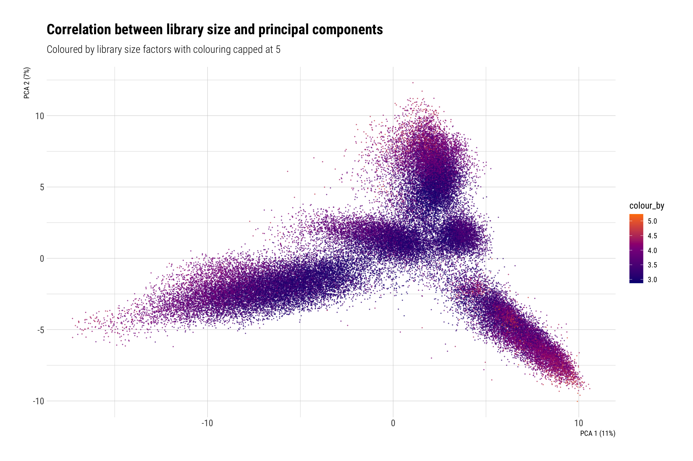
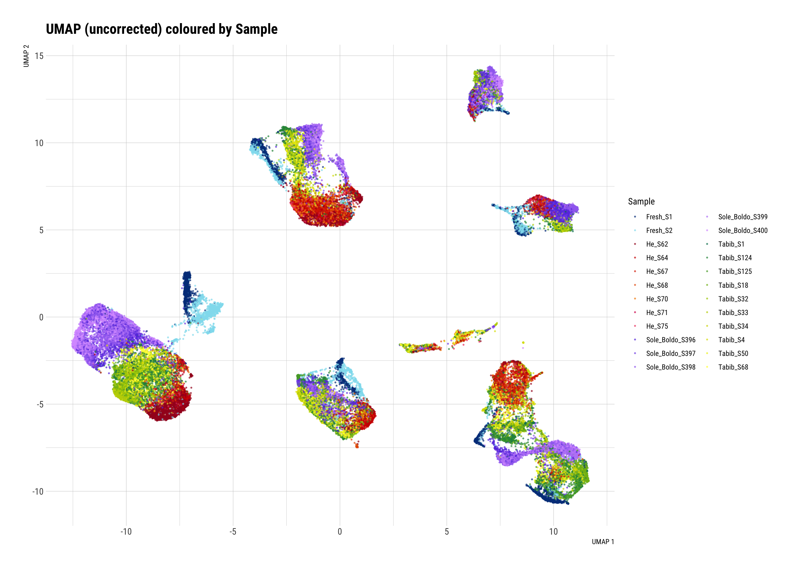
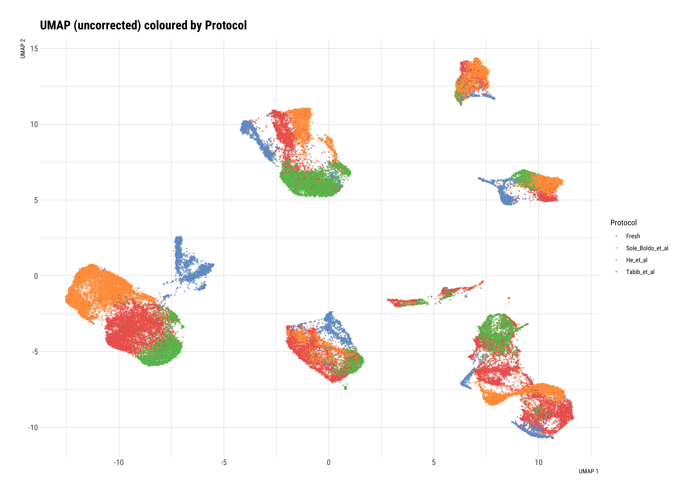

Normalisation, HVGs, Dimensionality Reduction
Dominique Paul
11/1/2021
Last updated: 2022-01-30
Checks: 6 1
Knit directory: 02_Protocol/analysis/
This reproducible R Markdown analysis was created with workflowr (version 1.7.0). The Checks tab describes the reproducibility checks that were applied when the results were created. The Past versions tab lists the development history.
The R Markdown is untracked by Git. To know which version of the R Markdown file created these results, you’ll want to first commit it to the Git repo. If you’re still working on the analysis, you can ignore this warning. When you’re finished, you can run wflow_publish to commit the R Markdown file and build the HTML.
Great job! The global environment was empty. Objects defined in the global environment can affect the analysis in your R Markdown file in unknown ways. For reproduciblity it’s best to always run the code in an empty environment.
The command set.seed(20211228) was run prior to running the code in the R Markdown file. Setting a seed ensures that any results that rely on randomness, e.g. subsampling or permutations, are reproducible.
Great job! Recording the operating system, R version, and package versions is critical for reproducibility.
Nice! There were no cached chunks for this analysis, so you can be confident that you successfully produced the results during this run.
Great job! Using relative paths to the files within your workflowr project makes it easier to run your code on other machines.
Great! You are using Git for version control. Tracking code development and connecting the code version to the results is critical for reproducibility.
The results in this page were generated with repository version 1923ae3. See the Past versions tab to see a history of the changes made to the R Markdown and HTML files.
Note that you need to be careful to ensure that all relevant files for the analysis have been committed to Git prior to generating the results (you can use wflow_publish or wflow_git_commit). workflowr only checks the R Markdown file, but you know if there are other scripts or data files that it depends on. Below is the status of the Git repository when the results were generated:
Ignored files:
Ignored: .DS_Store
Ignored: Metadata/.DS_Store
Ignored: Metadata/cell_annotation_markers/.DS_Store
Ignored: Paper/
Ignored: analysis/.DS_Store
Ignored: analysis/.RData
Ignored: analysis/.Rhistory
Ignored: analysis/Unused/.DS_Store
Ignored: code/.DS_Store
Ignored: code/seeds/.DS_Store
Ignored: data/
Ignored: output/.DS_Store
Untracked files:
Untracked: analysis/EDI_02_Normalisation_HVG_DimRed.Rmd
Untracked: analysis/EDI_03_Batch_correction.Rmd
Untracked: analysis/EDI_04_Cell_Cycle.Rmd
Untracked: analysis/EDI_05_Annotation.Rmd
Untracked: analysis/EDI_06_marker_genes.Rmd
Untracked: analysis/EDI_07_DA.Rmd
Untracked: analysis/EDI_08_Subclustering.Rmd
Untracked: analysis/P2_03_Fresh_only_subclustering.Rmd
Untracked: analysis/P2_03_FvC_Annotations.Rmd
Untracked: analysis/P2_04_FvC_gene_expression_plot.Rmd
Untracked: analysis/logs/EDI_01_Loading_and_Preprocessing.Rmd-2022-01-28-17h-59m-25s-err.txt
Untracked: analysis/logs/EDI_01_Loading_and_Preprocessing.Rmd-2022-01-28-17h-59m-25s-out.txt
Untracked: analysis/logs/EDI_01_Loading_and_Preprocessing.Rmd-2022-01-28-20h-11m-16s-err.txt
Untracked: analysis/logs/EDI_01_Loading_and_Preprocessing.Rmd-2022-01-28-20h-11m-16s-out.txt
Untracked: analysis/logs/EDI_01_Loading_and_Preprocessing.Rmd-2022-01-28-22h-42m-55s-err.txt
Untracked: analysis/logs/EDI_01_Loading_and_Preprocessing.Rmd-2022-01-28-22h-42m-55s-out.txt
Untracked: analysis/logs/EDI_01_Loading_and_Preprocessing.Rmd-2022-01-29-08h-29m-36s-err.txt
Untracked: analysis/logs/EDI_01_Loading_and_Preprocessing.Rmd-2022-01-29-08h-29m-36s-out.txt
Untracked: analysis/logs/EDI_01_Loading_and_Preprocessing.Rmd-2022-01-29-08h-43m-28s-err.txt
Untracked: analysis/logs/EDI_01_Loading_and_Preprocessing.Rmd-2022-01-29-08h-43m-28s-out.txt
Untracked: analysis/logs/EDI_01_Loading_and_Preprocessing.Rmd-2022-01-29-23h-45m-47s-err.txt
Untracked: analysis/logs/EDI_01_Loading_and_Preprocessing.Rmd-2022-01-29-23h-45m-47s-out.txt
Untracked: analysis/logs/EDI_01_Loading_and_Preprocessing.Rmd-2022-01-30-09h-31m-28s-err.txt
Untracked: analysis/logs/EDI_01_Loading_and_Preprocessing.Rmd-2022-01-30-09h-31m-28s-out.txt
Untracked: analysis/logs/EDI_02_Normalisation_HVG_DimRed.Rmd-2022-01-29-11h-16m-12s-err.txt
Untracked: analysis/logs/EDI_02_Normalisation_HVG_DimRed.Rmd-2022-01-29-11h-16m-12s-out.txt
Untracked: analysis/logs/EDI_02_Normalisation_HVG_DimRed.Rmd-2022-01-29-11h-36m-32s-err.txt
Untracked: analysis/logs/EDI_02_Normalisation_HVG_DimRed.Rmd-2022-01-29-11h-36m-32s-out.txt
Untracked: analysis/logs/EDI_02_Normalisation_HVG_DimRed.Rmd-2022-01-29-11h-42m-03s-err.txt
Untracked: analysis/logs/EDI_02_Normalisation_HVG_DimRed.Rmd-2022-01-29-11h-42m-03s-out.txt
Untracked: analysis/logs/EDI_02_Normalisation_HVG_DimRed.Rmd-2022-01-30-01h-26m-29s-err.txt
Untracked: analysis/logs/EDI_02_Normalisation_HVG_DimRed.Rmd-2022-01-30-01h-26m-29s-out.txt
Untracked: analysis/logs/EDI_02_Normalisation_HVG_DimRed.Rmd-2022-01-30-11h-38m-30s-err.txt
Untracked: analysis/logs/EDI_02_Normalisation_HVG_DimRed.Rmd-2022-01-30-11h-38m-30s-out.txt
Untracked: analysis/logs/EDI_02_Normalisation_HVG_DimRed.Rmd-2022-01-30-11h-58m-52s-err.txt
Untracked: analysis/logs/EDI_02_Normalisation_HVG_DimRed.Rmd-2022-01-30-11h-58m-52s-out.txt
Untracked: analysis/logs/EDI_02_Normalisation_HVG_DimRed.Rmd-2022-01-30-12h-06m-05s-err.txt
Untracked: analysis/logs/EDI_02_Normalisation_HVG_DimRed.Rmd-2022-01-30-12h-06m-05s-out.txt
Untracked: analysis/logs/EDI_02_Normalisation_HVG_DimRed.Rmd-2022-01-30-12h-30m-16s-err.txt
Untracked: analysis/logs/EDI_02_Normalisation_HVG_DimRed.Rmd-2022-01-30-12h-30m-16s-out.txt
Untracked: analysis/logs/EDI_03_Batch_correction.Rmd-2022-01-29-12h-45m-25s-err.txt
Untracked: analysis/logs/EDI_03_Batch_correction.Rmd-2022-01-29-12h-45m-25s-out.txt
Untracked: analysis/logs/EDI_03_Batch_correction.Rmd-2022-01-29-12h-56m-47s-err.txt
Untracked: analysis/logs/EDI_03_Batch_correction.Rmd-2022-01-29-12h-56m-47s-out.txt
Untracked: analysis/logs/EDI_03_Batch_correction.Rmd-2022-01-29-15h-44m-12s-err.txt
Untracked: analysis/logs/EDI_03_Batch_correction.Rmd-2022-01-29-15h-44m-12s-out.txt
Untracked: analysis/logs/EDI_03_Cell_Cycle.Rmd-2022-01-29-12h-09m-03s-err.txt
Untracked: analysis/logs/EDI_03_Cell_Cycle.Rmd-2022-01-29-12h-09m-03s-out.txt
Untracked: analysis/logs/EDI_03_Cell_Cycle.Rmd-2022-01-29-12h-39m-55s-err.txt
Untracked: analysis/logs/EDI_03_Cell_Cycle.Rmd-2022-01-29-12h-39m-55s-out.txt
Untracked: analysis/logs/EDI_04_Cell_Cycle.Rmd-2022-01-29-15h-17m-36s-err.txt
Untracked: analysis/logs/EDI_04_Cell_Cycle.Rmd-2022-01-29-15h-17m-36s-out.txt
Untracked: analysis/logs/EDI_05_Annotation.Rmd-2022-01-29-15h-21m-59s-err.txt
Untracked: analysis/logs/EDI_05_Annotation.Rmd-2022-01-29-15h-21m-59s-out.txt
Untracked: analysis/logs/EDI_05_Annotation.Rmd-2022-01-29-15h-44m-29s-err.txt
Untracked: analysis/logs/EDI_05_Annotation.Rmd-2022-01-29-15h-44m-29s-out.txt
Untracked: analysis/logs/EDI_05_Annotation.Rmd-2022-01-29-15h-45m-42s-err.txt
Untracked: analysis/logs/EDI_05_Annotation.Rmd-2022-01-29-15h-45m-42s-out.txt
Untracked: analysis/logs/EDI_06_marker_genes.Rmd-2022-01-29-15h-50m-44s-err.txt
Untracked: analysis/logs/EDI_06_marker_genes.Rmd-2022-01-29-15h-50m-44s-out.txt
Untracked: analysis/logs/EDI_07_DA.Rmd-2022-01-29-15h-53m-12s-err.txt
Untracked: analysis/logs/EDI_07_DA.Rmd-2022-01-29-15h-53m-12s-out.txt
Untracked: analysis/logs/EDI_07_DA.Rmd-2022-01-29-16h-48m-47s-err.txt
Untracked: analysis/logs/EDI_07_DA.Rmd-2022-01-29-16h-48m-47s-out.txt
Untracked: analysis/logs/EDI_07_DA.Rmd-2022-01-29-18h-15m-08s-err.txt
Untracked: analysis/logs/EDI_07_DA.Rmd-2022-01-29-18h-15m-08s-out.txt
Untracked: analysis/logs/EDI_08_Subclustering.Rmd-2022-01-29-18h-16m-26s-err.txt
Untracked: analysis/logs/EDI_08_Subclustering.Rmd-2022-01-29-18h-16m-26s-out.txt
Untracked: analysis/logs/EDI_08_Subclustering.Rmd-2022-01-29-19h-46m-01s-err.txt
Untracked: analysis/logs/EDI_08_Subclustering.Rmd-2022-01-29-19h-46m-01s-out.txt
Untracked: analysis/logs/EDI_08_Subclustering.Rmd-2022-01-29-19h-56m-34s-err.txt
Untracked: analysis/logs/EDI_08_Subclustering.Rmd-2022-01-29-19h-56m-34s-out.txt
Unstaged changes:
Modified: .gitignore
Modified: analysis/EDI_01_Loading_and_Preprocessing.Rmd
Modified: analysis/P2_01_data_comparison.Rmd
Deleted: analysis/Protocol paper/.Rprofile
Deleted: analysis/Protocol paper/.gitattributes
Deleted: analysis/Protocol paper/.gitignore
Deleted: analysis/Protocol paper/Protocol paper.Rproj
Deleted: analysis/Protocol paper/README.md
Deleted: analysis/Protocol paper/_workflowr.yml
Deleted: analysis/Protocol paper/analysis/_site.yml
Deleted: analysis/Protocol paper/analysis/about.Rmd
Deleted: analysis/Protocol paper/analysis/index.Rmd
Deleted: analysis/Protocol paper/analysis/license.Rmd
Deleted: analysis/Protocol paper/code/README.md
Deleted: analysis/Protocol paper/docs/.nojekyll
Deleted: analysis/Protocol paper/output/README.md
Deleted: analysis/Unused/EDI_02_Normalisation_HVG_DimRed.Rmd
Deleted: analysis/Unused/EDI_03_Batch_correction.Rmd
Deleted: analysis/Unused/EDI_04_Cell_Cycle.Rmd
Deleted: analysis/Unused/EDI_05_Annotation.Rmd
Deleted: analysis/Unused/EDI_06_marker_genes.Rmd
Deleted: analysis/Unused/EDI_07_DA.Rmd
Deleted: analysis/Unused/EDI_08_Subclustering.Rmd
Deleted: analysis/Unused/P2_03_Subclustering.Rmd
Deleted: analysis/Unused/P2_04_Annotated_Fresh_v_Culture.Rmd
Deleted: analysis/Unused/P2_05_gene_expression_plot.Rmd
Modified: analysis/admin.rmd
Modified: analysis/index.Rmd
Deleted: code/CF_readin_with_UMIs.Rmd
Deleted: code/code_snippets.Rmd
Modified: code/general_purpose_code.R
Deleted: code/rename_protocols.r
Deleted: code/test_muscat.Rmd
Deleted: code/utils_muscat.r
Note that any generated files, e.g. HTML, png, CSS, etc., are not included in this status report because it is ok for generated content to have uncommitted changes.
There are no past versions. Publish this analysis with wflow_publish() to start tracking its development.
Load data
sce <- readRDS(file = "../data/EOS_Files/EDI_EOS1_sce.rds")Normalisation via SC Transform
sce <- logNormCounts(sce)
sce_seurat <- as.Seurat(sce, counts="counts", data="logcounts")
seurat_normalized = sce_seurat %>%
Seurat::SCTransform(verbose = FALSE, assay="originalexp", min_cells=1)
sct_HVGs <- seurat_normalized@assays$SCT@var.features
assay(sce, "corrected") <- seurat_normalized@assays$SCT@counts
assay(sce, "logcounts") <- seurat_normalized@assays$SCT@data
rowData(sce)[, "sct_HVG"] <- FALSE
rowData(sce)[sct_HVGs, "sct_HVG"] <- TRUE
# Run PCA
set.seed(100)
sce <- runPCA(sce, subset_row=rowData(sce)$sct_HVG)
plotReducedDim(sce, "PCA", colour_by=I(sce$log_total), point_size=0.1) +
labs(title="Correlation between library size and principal components",
subtitle="Coloured by library size factors with colouring capped at 5") +
scale_colour_gradientn(#limits = c(0,5),
colours=c("navyblue", "darkmagenta", "darkorange1"),) +
theme_ipsum_rc()Scale for 'colour' is already present. Adding another scale for 'colour',
which will replace the existing scale.
# Check for correlation of PCA with log_total
cor.test(reducedDim(sce, "PCA")[,"PC1"], sce$log_total)
Pearson's product-moment correlation
data: reducedDim(sce, "PCA")[, "PC1"] and sce$log_total
t = 32.056, df = 56619, p-value < 2.2e-16
alternative hypothesis: true correlation is not equal to 0
95 percent confidence interval:
0.1254126 0.1415926
sample estimates:
cor
0.1335115 cor.test(reducedDim(sce, "PCA")[,"PC2"], sce$log_total)
Pearson's product-moment correlation
data: reducedDim(sce, "PCA")[, "PC2"] and sce$log_total
t = -32.514, df = 56619, p-value < 2.2e-16
alternative hypothesis: true correlation is not equal to 0
95 percent confidence interval:
-0.1434630 -0.1272912
sample estimates:
cor
-0.1353861 Identification of highly variable genes
Gene selection is important for the downstream analysis, such as clustering and dimensionality reduction. A too high number of genes can slow down computation speed and by including genes which aren’t interesting from a biological perspective we, more importantly, add more noise to the analysis. In general, there is a trade-off between retaining biological signals and increasing the noise form irrelevant genes.
We model the mean and the variance for each gene. Subsequently a trend is fitted to the data. Based on this trend we identify which genes strongly deviate from the trend and calculate the statistical significance: the p-value transformed into an false discovery rate (FDR) of the given result. We mark all genes with an FDR value 0.05 as a highly variable gene.
Show highly variable genes
dec.sce <- modelGeneVar(sce, block=sce$Sample)Warning in regularize.values(x, y, ties, missing(ties), na.rm = na.rm):
collapsing to unique 'x' values
Warning in regularize.values(x, y, ties, missing(ties), na.rm = na.rm):
collapsing to unique 'x' values
Warning in regularize.values(x, y, ties, missing(ties), na.rm = na.rm):
collapsing to unique 'x' values
Warning in regularize.values(x, y, ties, missing(ties), na.rm = na.rm):
collapsing to unique 'x' values
Warning in regularize.values(x, y, ties, missing(ties), na.rm = na.rm):
collapsing to unique 'x' values
Warning in regularize.values(x, y, ties, missing(ties), na.rm = na.rm):
collapsing to unique 'x' values
Warning in regularize.values(x, y, ties, missing(ties), na.rm = na.rm):
collapsing to unique 'x' values
Warning in regularize.values(x, y, ties, missing(ties), na.rm = na.rm):
collapsing to unique 'x' values
Warning in regularize.values(x, y, ties, missing(ties), na.rm = na.rm):
collapsing to unique 'x' values
Warning in regularize.values(x, y, ties, missing(ties), na.rm = na.rm):
collapsing to unique 'x' values
Warning in regularize.values(x, y, ties, missing(ties), na.rm = na.rm):
collapsing to unique 'x' values
Warning in regularize.values(x, y, ties, missing(ties), na.rm = na.rm):
collapsing to unique 'x' values
Warning in regularize.values(x, y, ties, missing(ties), na.rm = na.rm):
collapsing to unique 'x' values
Warning in regularize.values(x, y, ties, missing(ties), na.rm = na.rm):
collapsing to unique 'x' values#fit.vs <- metadata(dec.sce)
hvg_sub <- getTopHVGs(dec.sce, fdr.threshold=0.05)
mean_var_comb_sub <- purrr::map(unique(sce$Sample), ~ {
dec.sce$per.block[[.x]] %>%
as_tibble %>%
mutate(row_names = rownames(dec.sce$per.block[[.x]]),
is_hvg = row_names %in% hvg_sub,
Sample = .x)
}) %>%
purrr::reduce(rbind)
mean_var_comb_sub %>%
ggplot() +
geom_point(aes(x = mean, y = total, color= is_hvg)) +
geom_line(aes(x=mean, y= tech)) +
labs(y="Variance",x="Mean expression") +
facet_wrap(~Sample) +
scale_color_manual(values=c("orange","black")) +
labs(x="Mean of log-expression",
y="Variance of log-expression",
title="Variance of the expression values as a function of the mean")
rowData(sce)$is_hvg <- FALSE
rowData(sce)[hvg_sub,]$is_hvg <- TRUETabular overview of highly variable genes
# Ordering by most interesting genes for inspection.
dec.sce[order(dec.sce$bio, decreasing=TRUE),] %>%
as.data.frame() %>%
dplyr::select(c("mean", "total", "tech", "bio", "p.value", "FDR")) %>%
head(n=10) %>%
kable(digits=5) %>%
kable_styling(full_width=TRUE)| mean | total | tech | bio | p.value | FDR | |
|---|---|---|---|---|---|---|
| DCN.ENSG00000011465 | 1.07235 | 2.04420 | 0.37045 | 1.67375 | 0 | 0 |
| CFD.ENSG00000197766 | 0.92844 | 1.72388 | 0.36193 | 1.36195 | 0 | 0 |
| KRT14.ENSG00000186847 | 0.73412 | 1.62827 | 0.32970 | 1.29858 | 0 | 0 |
| CXCL14.ENSG00000145824 | 1.02147 | 1.54997 | 0.39062 | 1.15935 | 0 | 0 |
| CD74.ENSG00000019582 | 0.80733 | 1.46861 | 0.37290 | 1.09571 | 0 | 0 |
| IGFBP7.ENSG00000163453 | 1.30778 | 1.35347 | 0.41941 | 0.93406 | 0 | 0 |
| VIM.ENSG00000026025 | 1.94604 | 1.24699 | 0.33996 | 0.90703 | 0 | 0 |
| COL1A2.ENSG00000164692 | 0.70861 | 1.16405 | 0.35510 | 0.80895 | 0 | 0 |
| HLA-DRA.ENSG00000204287 | 0.59336 | 1.12031 | 0.34263 | 0.77768 | 0 | 0 |
| COL1A1.ENSG00000108821 | 0.60894 | 1.06503 | 0.32822 | 0.73681 | 0 | 0 |
Dimension reduction
We create a principal components dimensionality reduction of our data. We then use maxLikGlobalDimEst from the intrinsicDimension package to choose a number of dimensions that captures a big part of the variety in the data and at the same reduces the complexity of further operations. We use these reduced dimensions to calculate a UMAP (Uniform Manifold Approximation) dimensionality reduction.
However, in the next script we run the batch integration which we can then use for a much better UMAP.
# run PCA
set.seed(100)
sce_tmp <- runPCA(sce, name = "PCA", subset_row=rowData(sce)$is_hvg)
# subset dimensions for reduced representation
ndims <- intrinsicDimension::maxLikGlobalDimEst(as.matrix(reducedDim(sce_tmp, "PCA")), k=20)
reducedDim(sce_tmp,"PCA_reduced") <- reducedDim(sce_tmp,"PCA")[,seq_len(ceiling(ndims$dim.est))]
# run UMAP
set.seed(100)
sce_tmp <- runUMAP(sce_tmp, name = "UMAP", dimred = "PCA_reduced", subset_row=rowData(sce_tmp)$is_hvg, n_neighbors=50, min_dist = 0.1)
# add all reduced dimensions to the original sce object
reducedDim(sce, "PCA") <- reducedDim(sce_tmp, "PCA")
reducedDim(sce, "PCA_reduced") <- reducedDim(sce_tmp, "PCA")[,seq_len(ceiling(ndims$dim.est))]
reducedDim(sce, "UMAP") <- reducedDim(sce_tmp,"UMAP")
cor.test(reducedDim(sce, "PCA")[,"PC1"], sce$log_total)
Pearson's product-moment correlation
data: reducedDim(sce, "PCA")[, "PC1"] and sce$log_total
t = 36.456, df = 56619, p-value < 2.2e-16
alternative hypothesis: true correlation is not equal to 0
95 percent confidence interval:
0.1433863 0.1594822
sample estimates:
cor
0.1514443 Plot PCA and UMAP (no batch correction yet)
The data is not yet batch-corrected, so we don’t expect any interesting biological differences to be reflected in the first reduced dimension plots.
PCA
# by Sample
cat("\n\n### PCA by sample \n")PCA by sample
set.seed(100)
shuffle <- sample(seq_len(dim(sce)[2]))
plotReducedDim(sce[,shuffle], "PCA", colour_by = "Sample") +
labs(title="PCA coloured by sample") +
theme_ipsum_rc() +
get_sample_colours(levels(sce$Sample))Scale for 'colour' is already present. Adding another scale for 'colour',
which will replace the existing scale.
# by protocol
cat("\n\n### PCA by protocol \n")PCA by protocol
set.seed(100)
shuffle <- sample(seq_len(dim(sce)[2]))
plotReducedDim(sce[,shuffle], "PCA", colour_by = "Protocol") +
labs(title="PCA coloured by protocol") +
theme_ipsum_rc() +
get_protocol_colours(levels(sce$Protocol))Scale for 'colour' is already present. Adding another scale for 'colour',
which will replace the existing scale.
UMAP
We see that the UMAP clearly does not filter for biological features like cell types before applying any batch correction.
# by sample
cat("\n\n### UMAP by sample \n")UMAP by sample
set.seed(100)
shuffle <- sample(seq_len(dim(sce)[2]))
plotReducedDim(sce[,shuffle], "UMAP", colour_by = "Sample", point_size=0.5) +
labs(color="Sample",
title="UMAP (uncorrected) coloured by Sample") +
theme_ipsum_rc() +
get_sample_colours(levels(sce$Sample))Scale for 'colour' is already present. Adding another scale for 'colour',
which will replace the existing scale.
# by protocol
cat("\n\n### UMAP by protocol \n")UMAP by protocol
set.seed(100)
shuffle <- sample(seq_len(dim(sce)[2]))
plotReducedDim(sce[,shuffle], "UMAP", colour_by = "Protocol", point_size=0.5) +
labs(title="UMAP (uncorrected) coloured by Protocol", color="Protocol") +
theme_ipsum_rc()
get_protocol_colours(levels(sce$Protocol))<ggproto object: Class ScaleDiscrete, Scale, gg> aesthetics: colour axis_order: function break_info: function break_positions: function breaks: waiver call: call clone: function dimension: function drop: TRUE expand: waiver get_breaks: function get_breaks_minor: function get_labels: function get_limits: function guide: legend is_discrete: function is_empty: function labels: waiver limits: Fresh He_et_al Sole_Boldo_et_al Tabib_et_al make_sec_title: function make_title: function map: function map_df: function n.breaks.cache: NULL na.translate: TRUE na.value: grey50 name: Protocol palette: function palette.cache: NULL position: left range: <ggproto object: Class RangeDiscrete, Range, gg> range: NULL reset: function train: function super: <ggproto object: Class RangeDiscrete, Range, gg> rescale: function reset: function scale_name: manual train: function train_df: function transform: function transform_df: function super: <ggproto object: Class ScaleDiscrete, Scale, gg>
Save data and upload to iSEE
file_path <- "../data/EOS_Files/EDI_EOS2_sce.rds"
saveRDS(sce, file = file_path)
upload_file_to_iSEE(file_path)Command executed:
scp -i ~/.ssh/id_imls_servers /Users/dominiquepaul/xRobinson\ Group/02_Protocol/data/EOS_Files/EDI_EOS2_sce.rds dominique@imlspenticton.uzh.ch:/home/Shared/retger/synovial/data/protocol_paper_BBDP/sce/EDI_EOS2_sce___2022-01-30.rds
sessionInfo()R version 4.1.0 (2021-05-18)
Platform: x86_64-apple-darwin17.0 (64-bit)
Running under: macOS Big Sur 10.16
Matrix products: default
BLAS: /Library/Frameworks/R.framework/Versions/4.1/Resources/lib/libRblas.dylib
LAPACK: /Library/Frameworks/R.framework/Versions/4.1/Resources/lib/libRlapack.dylib
locale:
[1] en_US.UTF-8/en_US.UTF-8/en_US.UTF-8/C/en_US.UTF-8/en_US.UTF-8
attached base packages:
[1] parallel stats4 stats graphics grDevices utils datasets
[8] methods base
other attached packages:
[1] stringr_1.4.0 openxlsx_4.2.5
[3] dplyr_1.0.7 RColorBrewer_1.1-2
[5] SeuratObject_4.0.4 Seurat_4.0.6
[7] intrinsicDimension_1.2.0 yaImpute_1.0-32
[9] kableExtra_1.3.4 hrbrthemes_0.8.6
[11] scater_1.22.0 ggplot2_3.3.5
[13] BiocParallel_1.28.3 scran_1.22.1
[15] scuttle_1.4.0 tidySingleCellExperiment_1.4.0
[17] SingleCellExperiment_1.16.0 SummarizedExperiment_1.24.0
[19] Biobase_2.54.0 GenomicRanges_1.46.1
[21] GenomeInfoDb_1.30.0 IRanges_2.28.0
[23] S4Vectors_0.32.3 BiocGenerics_0.40.0
[25] MatrixGenerics_1.6.0 matrixStats_0.61.0
loaded via a namespace (and not attached):
[1] utf8_1.2.2 reticulate_1.22
[3] tidyselect_1.1.1 htmlwidgets_1.5.4
[5] grid_4.1.0 Rtsne_0.15
[7] munsell_0.5.0 ScaledMatrix_1.2.0
[9] codetools_0.2-18 ica_1.0-2
[11] statmod_1.4.36 future_1.23.0
[13] miniUI_0.1.1.1 withr_2.4.3
[15] colorspace_2.0-2 highr_0.9
[17] knitr_1.37 rstudioapi_0.13
[19] ROCR_1.0-11 tensor_1.5
[21] Rttf2pt1_1.3.8 listenv_0.8.0
[23] labeling_0.4.2 git2r_0.29.0
[25] GenomeInfoDbData_1.2.7 polyclip_1.10-0
[27] farver_2.1.0 rprojroot_2.0.2
[29] parallelly_1.30.0 vctrs_0.3.8
[31] generics_0.1.1 xfun_0.29
[33] R6_2.5.1 ggbeeswarm_0.6.0
[35] rsvd_1.0.5 locfit_1.5-9.4
[37] bitops_1.0-7 spatstat.utils_2.3-0
[39] DelayedArray_0.20.0 assertthat_0.2.1
[41] promises_1.2.0.1 scales_1.1.1
[43] beeswarm_0.4.0 gtable_0.3.0
[45] beachmat_2.10.0 globals_0.14.0
[47] goftest_1.2-3 workflowr_1.7.0
[49] rlang_0.4.12 systemfonts_1.0.3
[51] splines_4.1.0 extrafontdb_1.0
[53] lazyeval_0.2.2 spatstat.geom_2.3-1
[55] abind_1.4-5 yaml_2.2.1
[57] reshape2_1.4.4 httpuv_1.6.4
[59] extrafont_0.17 tools_4.1.0
[61] ellipsis_0.3.2 spatstat.core_2.3-2
[63] jquerylib_0.1.4 ggridges_0.5.3
[65] Rcpp_1.0.8 plyr_1.8.6
[67] sparseMatrixStats_1.6.0 zlibbioc_1.40.0
[69] purrr_0.3.4 RCurl_1.98-1.5
[71] rpart_4.1-15 deldir_1.0-6
[73] pbapply_1.5-0 viridis_0.6.2
[75] cowplot_1.1.1 zoo_1.8-9
[77] ggrepel_0.9.1 cluster_2.1.2
[79] fs_1.5.2 magrittr_2.0.1
[81] RSpectra_0.16-0 data.table_1.14.2
[83] scattermore_0.7 lmtest_0.9-39
[85] RANN_2.6.1 fitdistrplus_1.1-6
[87] patchwork_1.1.1 mime_0.12
[89] evaluate_0.14 xtable_1.8-4
[91] RhpcBLASctl_0.21-247.1 gridExtra_2.3
[93] compiler_4.1.0 tibble_3.1.6
[95] KernSmooth_2.23-20 crayon_1.4.2
[97] htmltools_0.5.2 mgcv_1.8-38
[99] later_1.3.0 tidyr_1.1.4
[101] DBI_1.1.2 MASS_7.3-54
[103] Matrix_1.4-0 cli_3.1.0
[105] metapod_1.2.0 igraph_1.2.10
[107] pkgconfig_2.0.3 spatstat.sparse_2.1-0
[109] plotly_4.10.0 xml2_1.3.3
[111] svglite_2.0.0 vipor_0.4.5
[113] bslib_0.3.1 dqrng_0.3.0
[115] webshot_0.5.2 XVector_0.34.0
[117] rvest_1.0.2 digest_0.6.29
[119] sctransform_0.3.2 RcppAnnoy_0.0.19
[121] spatstat.data_2.1-2 rmarkdown_2.11
[123] leiden_0.3.9 uwot_0.1.11
[125] edgeR_3.36.0 DelayedMatrixStats_1.16.0
[127] gdtools_0.2.3 shiny_1.7.1
[129] nlme_3.1-153 lifecycle_1.0.1
[131] jsonlite_1.7.3 BiocNeighbors_1.12.0
[133] viridisLite_0.4.0 limma_3.50.0
[135] fansi_1.0.2 pillar_1.6.4
[137] lattice_0.20-45 fastmap_1.1.0
[139] httr_1.4.2 survival_3.2-13
[141] glue_1.6.0 zip_2.2.0
[143] png_0.1-7 bluster_1.4.0
[145] stringi_1.7.6 sass_0.4.0
[147] BiocSingular_1.10.0 irlba_2.3.5
[149] future.apply_1.8.1